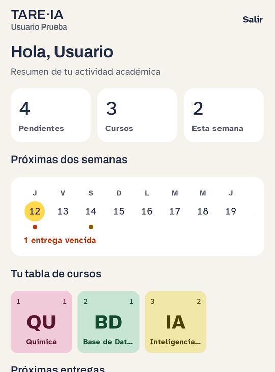
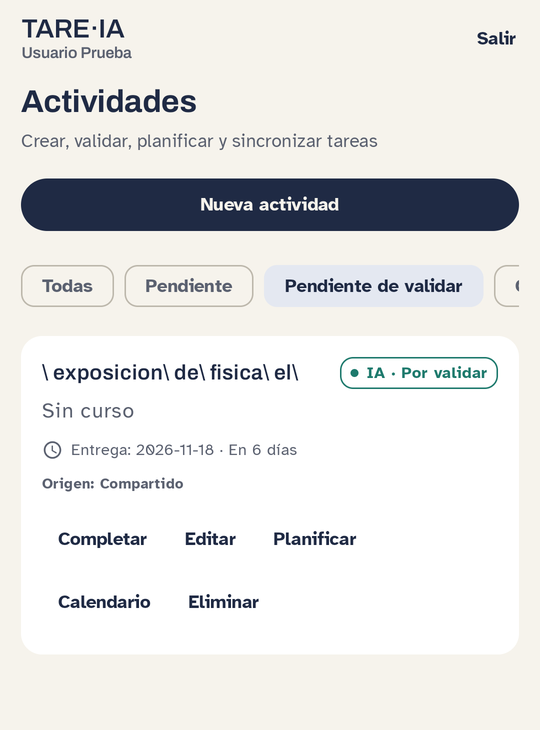
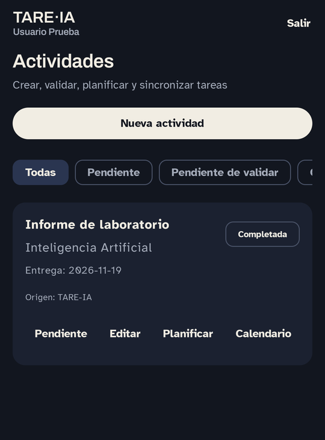
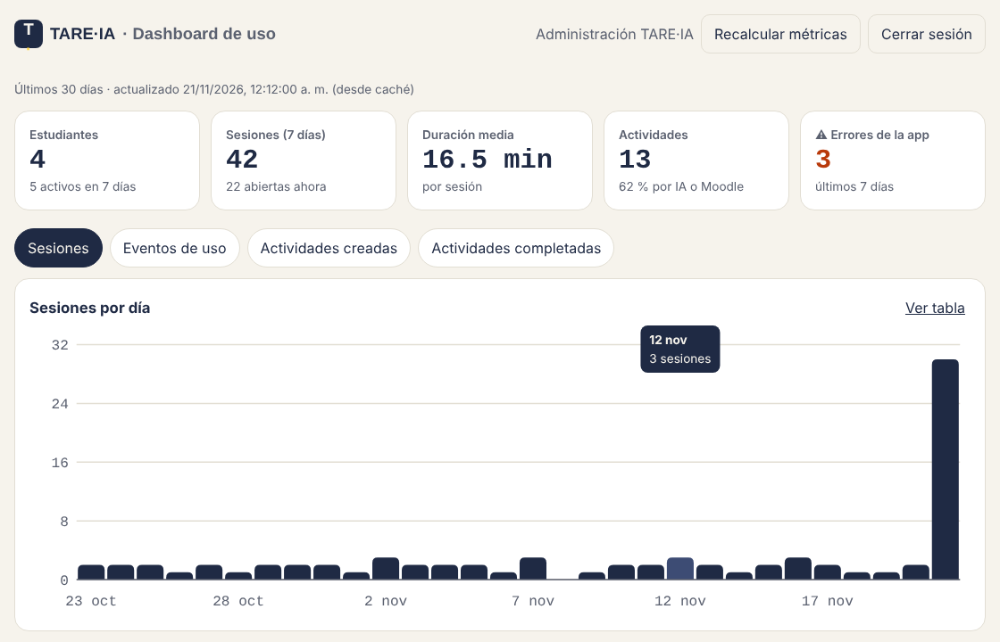
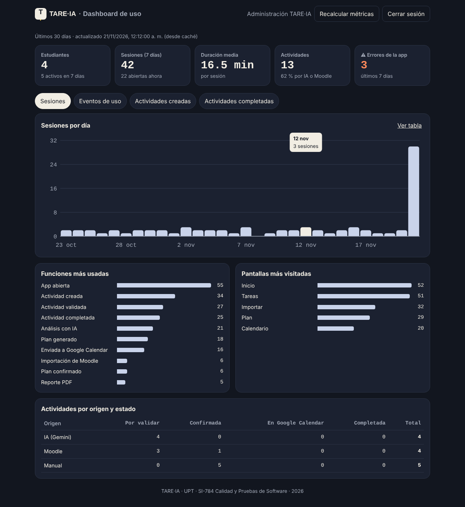

Universidad Privada de Tacna · Facultad de Ingeniería · EPIS
Asistente académico Android que convierte apuntes, PDF y tareas del aula virtual en actividades con fecha, planes de estudio y recordatorios.
Adriana Rafaela Laos González · 2023077474
Antony Piero Solorzano Zegarra · 2023078696
Docente: Ing. Patrick Cuadros Quiroga · Tacna, noviembre de 2026
(≈60 s) Buenos días, profesor Cuadros y compañeros. Somos Adriana Laos y Antony Solorzano, y presentamos TARE·IA, nuestro proyecto de la Unidad II de Calidad y Pruebas de Software.
TARE·IA es una app Android que ayuda al estudiante a no perder tareas. Le das una foto de tus apuntes, un PDF o las tareas del aula virtual, y la app las convierte en actividades con fecha, arma un plan de estudio y las manda a tu Google Calendar.
Pero en este curso lo importante no es solo la app: es cómo comprobamos que funciona. Por eso la mayor parte de la exposición trata de pruebas, análisis estático, infraestructura y automatización.
El diseño que ven es la identidad de la app: un tablero con forma de tabla periódica. Cada diapositiva tiene su celda arriba a la derecha y, abajo a la izquierda, el criterio de la rúbrica que cubre. Así puede seguir la evaluación punto por punto.
El problema
Las tareas están en todas partes, menos en tu calendario
1
Información dispersa
Aula virtual (Moodle), grupos de mensajería, PDF del sílabo y fotos de la pizarra.
2
Copia manual de fechas
Pasar cada fecha al calendario a mano produce errores, duplicados y olvidos.
3
Planificar cuesta
Sin un plan de estudio, el cambio constante de tarea cansa y lleva a postergar.
¿Y si la IA lee las tareas por ti… pero tú confirmas antes de que algo llegue a tu calendario?
Base: FD02 Documento de Visión, §2.2 «Definición del problema».
Rúbrica · Problemática detallada con fuentes
(≈75 s) El problema. Un estudiante de la UPT recibe tareas por muchos lados: el aula virtual, que es Moodle; el grupo de WhatsApp del curso; el sílabo en PDF; una foto de la pizarra. Nada de eso llega solo a su calendario.
Entonces tiene que copiar las fechas a mano. Ahí aparecen los errores: una fecha mal escrita, la misma tarea registrada dos veces o, lo peor, una tarea olvidada.
Y aunque tenga todo anotado, falta el plan: cuándo estudio para cada cosa. Cambiar todo el tiempo de una tarea a otra cansa y termina en postergar.
Nuestra propuesta: que la inteligencia artificial lea las tareas por el estudiante, pero que nada llegue al calendario sin que él lo confirme. Esa idea, «la IA propone, la persona decide», es una regla de negocio que van a ver repetida en la app, en la API y en la base de datos.
[COMPLETAR CON FUENTES: agregar 2 o 3 datos con cita APA (por ejemplo, estudios sobre procrastinación académica o uso de aulas virtuales en universidades peruanas) cuando esté listo docs/investigacion/problema-y-objetivos.md. No decir cifras sin fuente.]
Objetivos SMART · semestre 2026-II
Cada objetivo tiene un indicador y una forma de medirlo
Objetivo Indicador Meta Resultado
Validación humana Actividades de IA o Moodle que llegan a Calendar sin validar 0 0 · HU-03 + trigger Sin duplicados Actividades repetidas (título + curso + fecha) 0 0 · HU-02 Calidad de pruebas Mutantes eliminados: API · dominio Kotlin ≥ 60 % · ≥ 50 % 93,8 % · 68,4 % Costo Gasto mensual de infraestructura USD 0 USD 0 Uso real Sesiones por semana y % de actividades creadas por IA o Moodle medir en piloto instrumentado
Rúbrica · Objetivos de investigación y de solución medibles
(≈80 s) Nuestros objetivos son medibles: cada uno tiene indicador, meta y un instrumento que lo mide.
Uno: validación humana. Ninguna actividad que venga de la IA o de Moodle puede llegar a Google Calendar sin que el estudiante la confirme. Lo comprueba la historia de usuario HU-03 en Cucumber y, además, un trigger en la base de datos que rechaza ese salto.
Dos: cero duplicados, con la misma tarea normalizada por título, curso y fecha. Lo prueba la HU-02.
Tres: calidad de las pruebas. No basta con tener pruebas; medimos con pruebas de mutación si detectan errores. La meta era 60 % en la API y 50 % en el dominio Kotlin; logramos 93,8 y 68,4 %.
Cuatro: costo cero, que cumplimos con capas gratuitas.
Y cinco, el uso real. Aquí soy honesta: la telemetría y el dashboard ya están listos para medirlo, pero el piloto con estudiantes todavía no se hizo, por eso aparece en ámbar como «instrumentado».
[Ajustar los códigos OS/OI a los del FD01 final.]
La solución
Del apunte a una actividad con fecha, validada por ti

Inicio: próximos 14 días

Lo de la IA trae sello

Modo oscuro y letra al 180 %
Entra una foto, PDF, texto o tarea de MoodleLa IA propone título, curso y fecha IA Tú validas o corrigesSe planifica y va a Google Calendar
Kotlin 2.3 · Jetpack Compose · Material 3 · Android 9+
Rúbrica · Código fuente en GitHub · Presentación
(≈75 s) Esta es la app. Es Android nativa, hecha en Kotlin con Jetpack Compose.
A la izquierda, la pantalla de inicio: arriba una cinta con los próximos 14 días, con un punto por cada entrega y su urgencia; abajo, la tabla de cursos. Cada curso es un elemento de la tabla periódica, con su número y su símbolo.
Al centro, lo más importante: cuando la IA sugiere una actividad, llega con este sello verde «IA · Por validar». Ese color, el sello, está reservado solo para lo que propone la IA.
A la derecha, el modo oscuro. También probamos la letra al 180 % para personas con baja visión.
El flujo es de cuatro pasos: entra el material, la IA propone, tú validas y recién ahí se planifica y se envía a Google Calendar.
En la demo lo van a ver funcionando.
Arquitectura por capas
Tres piezas, cada una con capas separadas
App Android
ui/ pantallas Compose
aplicacion/ gestores (casos de uso)
dominio/ entidades y reglas
ia/ · infraestructura/ · remoto/
→
API REST
Node 22 · Fastify 5 · TypeScript
rutas + JWT + Swagger
servicios
repositorios
→
Datos y uso
PostgreSQL 16 en Neon
Liquibase versiona el esquema
Dashboard React + Vite
Servidor MCP
Servicios externos: Firebase Authentication · Gemini (Firebase AI Logic) · Google Calendar · Moodle UPT · ML Kit OCR (en el teléfono)
Rúbrica · FD04 · README con diagrama de componentes y despliegue
(≈80 s) La arquitectura tiene tres piezas.
Primero la app Android, separada en capas: la interfaz en Compose; la capa de aplicación con los gestores, que son los casos de uso; el dominio, con las entidades y las reglas de negocio, que no depende de Android; y abajo la infraestructura: la base local cifrada, la IA y la conexión remota. La inyección de dependencias es manual, en una clase Dependencias, sin frameworks.
Segundo, la API REST en Node con Fastify y TypeScript. También en capas: rutas, servicios y repositorios. Tiene autenticación con JWT y documentación Swagger.
Tercero, los datos: PostgreSQL 16 en Neon, con el esquema versionado por Liquibase. De ahí leen el dashboard de uso, hecho en React, y el servidor MCP del reto.
Abajo, los servicios externos: Firebase para el inicio de sesión con Google, Gemini para la IA, Google Calendar, Moodle de la UPT y el OCR de ML Kit, que corre dentro del teléfono.
Los diagramas de componentes y despliegue están en el README y se generan solos.
Patrones de diseño
Nueve patrones, cada uno resuelve un problema real
C1
Bu
Builder
Manual con fecha nace Confirmada; IA nace por validar
C2
Pr
Prototype
Clona el plan como propuesta antes de confirmar
C3
Af
Abstract Factory
Gemini u otro proveedor de IA
C4
Si
Singleton
Una sola base local cifrada
E1
Fa
Facade
«Nube» oculta API, sesión y colas
B1
St
State
Pendiente → Confirmada → Sincronizada → Completada
B2
Sg
Strategy
Plan con IA; si falla, plan local por prioridad
B3
Ob
Observer
Cada evento de uso avisa a la telemetría
A1
Re
Repository
Interfaz en dominio, implementación local o remota
creacional
estructural
comportamiento
arquitectura
Rúbrica · FD04 · Diagrama de clases en el README
(≈90 s) Usamos nueve patrones, y cada uno resuelve algo concreto. Los agrupamos como familias de la tabla periódica, por color.
Creacionales, en verde. Builder: una actividad creada a mano con fecha nace Confirmada; una que viene de la IA o de Moodle nace Pendiente de validar. Esa es la regla RN09. Prototype: el plan de estudio se clona como propuesta; si el estudiante la confirma, el plan anterior queda como Reemplazado y no se pierde. Abstract Factory: fabrica los servicios de IA, con Gemini o con otro proveedor compatible. Singleton: hay una sola base de datos local cifrada.
Estructural, en azul: Facade. La clase Nube esconde la API, la sesión y las colas de envío detrás de una interfaz simple.
De comportamiento, en lila. State: la actividad pasa de Pendiente de validar a Confirmada, Sincronizada y Completada, y no puede saltarse pasos. Strategy: planifica con IA, y si la IA falla cambia en ejecución a una planificación local por prioridad. Observer: cada evento de uso avisa al observador de telemetría.
Y Repository, de arquitectura: las interfaces viven en el dominio y la implementación puede ser local o remota.
Todos tienen pruebas en PatronesTest.
Base de datos y nube
Las reglas importantes también viven en PostgreSQL
El patrón State, repetido en un trigger
Pendiente de validar →
Confirmada →
Sincronizada →
Completada
fn_actividad_transicion rechaza los saltos inválidos, aunque alguien escriba directo en la BD.
Liquibase: cada cambio en SQL con su rollback ; se aplica solo en producción al publicar.
Vistas para el dashboard: mv_uso_diario (materializada), uso por función y por pantalla.
Rúbrica · Código fuente y BD en GitHub · Diccionario de datos y ER
(≈80 s) La base de datos es PostgreSQL 16, alojada en Neon. Tiene 11 tablas, 6 vistas, 7 funciones y 7 triggers, y el esquema se construye con 11 changesets de Liquibase.
La decisión más importante: las reglas críticas no viven solo en la app. El patrón State que vieron en Kotlin está repetido en un trigger. Si alguien intenta pasar una actividad de Pendiente de validar directo a Sincronizada, aunque sea escribiendo SQL a mano, la función fn_actividad_transicion lo rechaza. Así cumplimos la regla RN01: nada va a Calendar sin validar.
Otro trigger, fn_registrar_historial, guarda el antes y el después de cada cambio; lo vemos en requisitos no funcionales.
Liquibase: cada changeset es un archivo SQL con su rollback, y se aplica automáticamente en producción cuando publicamos una versión.
Y las vistas alimentan el dashboard; la de uso diario es materializada, para que el tablero cargue rápido.
El diccionario de datos y el diagrama entidad-relación se generan solos desde la base real.
Requisitos no funcionales
Sesiones, historial, caché, logs y telemetría
Requisito Cómo lo hicimos Dónde se ve
Sesiones Token de Google → JWT de 7 días; fila en sesion; se cierra al salir o tras 30 min sin uso HU-01 · tabla sesion Historial Trigger guarda el antes y el después (JSONB) de cada cambio /actividades/{id}/historialCaché Caché con TTL del dashboard, vista materializada y caché HTTP de 5 MB en la app cabecera x-cache · /api/health Logs JSON estructurado (pino) sin contraseñas ni tokens; la app sube sus errores enmascarados tabla log_cliente Telemetría Eventos de uso en lotes de 20, sin datos personales dashboard de uso
Rúbrica · Aspectos no funcionales (semanas 2–6)
(≈90 s) La rúbrica pide cinco aspectos no funcionales. Los resumimos en esta tabla.
Sesiones: al entrar con Google, la app cambia el token de Firebase por un JWT de nuestra API, válido 7 días. Cada inicio abre una fila en la tabla sesion, con el origen, el dispositivo y la versión. Se cierra al salir o después de 30 minutos sin actividad. En el teléfono, el token se guarda cifrado con el Android Keystore.
Historial: un trigger guarda el estado anterior y el nuevo, en JSON, de cada alta, cambio o borrado. Se consulta en el endpoint de historial de cada actividad.
Caché: el dashboard usa una caché en memoria con tiempo de vida; la respuesta trae la cabecera x-cache con HIT o MISS, y el endpoint de salud muestra aciertos y fallos. Además, la vista materializada y una caché HTTP de 5 megas en la app.
Logs: en formato JSON, ocultando contraseñas y tokens. La app sube sus advertencias y errores con los correos enmascarados.
Telemetría: la app junta eventos de uso en una cola y los envía en lotes de 20, sin datos personales. Con eso se alimenta el dashboard.
Pirámide de pruebas · resultados reales
Todo en verde, y las pruebas encontraron 3 defectos
Aceptación
Interfaz · 16 Playwright + 14 Compose
Sistema · 11 con servidor HTTP real
Integración · 22 con PostgreSQL real
Unitarias · 66 Vitest + 35 JVM Kotlin
Mutación · Stryker 93,8 % · Pitest 68,4 %
1. El historial fallaba al borrar un usuario en cascada.
2. Un correo con mayúsculas o cambiado chocaba con el mismo usuario de Google.
3. Los duplicados no se detectaban si había espacios repetidos.
API: 66 + 22 + 11 = 99 pruebas . Cada defecto quedó con su prueba de regresión.
Rúbrica · Pruebas unitarias, mutación, integración, sistema, UI y aceptación + reportes
(≈90 s) Esta es la pirámide de pruebas, con números reales.
En la base, 66 pruebas unitarias de la API con Vitest y 35 pruebas JVM del dominio Kotlin. Encima, 22 de integración contra un PostgreSQL real, no simulado, y 11 de sistema que levantan el servidor HTTP y revisan CORS, cabeceras de seguridad, límite de peticiones y Swagger. En total, 99 pruebas de la API.
Interfaz: 8 pruebas de Playwright en dos dispositivos, escritorio y un Pixel 7, que dan 16; y 14 pruebas de Compose en el emulador. Arriba, aceptación: 18 escenarios en Cucumber, escritos en español, sobre 5 historias de usuario.
Y debajo de todo, la mutación: Stryker cambia el código de la API a propósito y nuestras pruebas detectaron el 93,8 % de esos cambios. Pitest, en el dominio Kotlin, el 68,4 %.
Lo más valioso: las pruebas encontraron tres defectos reales. El historial fallaba al borrar un usuario en cascada; un correo con mayúsculas chocaba con el mismo usuario de Google; y los duplicados no se detectaban si el título tenía espacios repetidos. Los tres se corrigieron y quedaron con su prueba.
Análisis estático automatizado
Tres herramientas, tres miradas distintas
SonarQube Cloud
Revisa: bugs, vulnerabilidades, security hotspots , código duplicado y cobertura.
Reporte: quality gate en cada PR y panel en SonarCloud.
Semgrep
Revisa: patrones inseguros en Kotlin, TypeScript, React, Terraform, inyección SQL y secretos.
Reporte: SARIF en GitHub Code Scanning.
Snyk
Revisa: librerías vulnerables de npm y Gradle, el código propio (Snyk Code) e IaC.
Reporte: SARIF en Code Scanning y resumen del job.
Corren en cada push y pull request a main: sonarqube.yml · semgrep.yml · snyk.yml
Rúbrica · SonarQube (bugs, vulnerabilidades, hotspots) · Semgrep + Snyk con reporte
(≈75 s) El análisis estático revisa el código sin ejecutarlo. Usamos tres herramientas porque miran cosas diferentes.
SonarQube Cloud mide la calidad general: bugs, vulnerabilidades, los security hotspots, que son partes del código que una persona debe revisar, código duplicado y cobertura de pruebas. Su reporte es el quality gate: si no se cumple, el pull request queda marcado.
Semgrep busca patrones inseguros con reglas: para Kotlin, TypeScript, React, Node, Terraform, inyección SQL y secretos olvidados en el código. Su reporte sale en formato SARIF y aparece en la pestaña de seguridad de GitHub, Code Scanning.
Snyk se enfoca en las dependencias: avisa si alguna librería de npm o de Gradle tiene una vulnerabilidad conocida. También revisa nuestro código y la infraestructura como código.
Las tres corren solas en cada push y pull request. [Mostrar en vivo la pestaña Security del repositorio y el panel de SonarCloud con los números del día; no decir cifras de memoria.]
Release y despliegue
Un merge a main termina en producción, solo
1 · Commit
Convencional: feat, fix…
→
2 · Versión
release-please y CHANGELOG
→
3 · Artefactos
APK, API, dashboard y MCP
→
4 · BD
Liquibase en producción
→
5 · Deploy
Hooks de Render
→
6 · Smoke
/api/health responde
API tareia-api.onrender.com
Swagger tareia-api.onrender.com/api/docs
Dashboard tareia-dashboard.onrender.com
Rúbrica · Release + despliegue · Contribuciones
(≈70 s) El despliegue está automatizado de punta a punta en release.yml.
Todo empieza con commits convencionales: feat para una función nueva, fix para una corrección. Con eso, release-please calcula la siguiente versión y escribe el CHANGELOG.
Al publicar la versión se generan los artefactos: el APK de Android, la API, el dashboard y el paquete del servidor MCP, y se adjuntan en GitHub Releases.
Después se aplican los cambios de Liquibase en la base de producción, se llaman los deploy hooks de Render y, al final, una prueba de humo consulta el endpoint de salud. Si no responde, el workflow falla y nos enteramos.
Abajo están las direcciones de producción: la API, su documentación Swagger y el dashboard. [Confirmar las URLs con terraform output antes de exponer.]
Los commits convencionales también sirven para ver las contribuciones de cada integrante en el historial.
Documentación automática
La documentación se genera desde el código
docs.yml · README
Diccionario de datos desde la BD real
Diagramas Mermaid: ER, clases, componentes y despliegue
El README se actualiza solo
pages.yml · GitHub Pages
Dokka: cada clase, método y propiedad de KotlinTypeDoc: la API y el dashboard en TypeScriptReportes de pruebas, esta presentación y los PDF
Rúbrica · README con diccionario, ER, clases, componentes y despliegue · GitHub Pages
(≈70 s) Si la documentación se escribe a mano, se desactualiza. Por eso la generamos desde el código.
El workflow docs.yml lee la base de datos real y produce el diccionario de datos; también genera los diagramas en Mermaid: entidad-relación, clases, componentes y despliegue. Con eso se actualiza el README, que es lo que pide la rúbrica.
El workflow pages.yml publica en GitHub Pages. Para Kotlin usamos Dokka, que documenta cada clase, método y propiedad de la app. Para TypeScript, TypeDoc, que documenta la API y el dashboard. Además se publican los reportes de pruebas, de mutación, esta presentación y los documentos en PDF.
Todo queda en esta dirección: laos19.github.io/TareaIA. Si gustan, al final la abrimos y buscamos cualquier clase.
Dashboard de utilización
Así sabemos cómo se usa la app

Solo para el rol admin
Estudiantes, sesiones, duración, actividades y errores
Gráficos por día con vista de tabla
Funciones y pantallas más usadas
Claro, oscuro y móvil

Rúbrica · Dashboard de utilización
(≈75 s) El dashboard de utilización está hecho en React y solo lo puede ver un usuario con rol administrador.
Arriba, los indicadores: cuántos estudiantes, cuántas sesiones en los últimos siete días, la duración media de una sesión, cuántas actividades se crearon y cuántos errores reportó la app. El de errores va en color lacre para llamar la atención.
Debajo, sesiones, eventos y actividades por día. Cada gráfico tiene una vista de tabla, para quien usa lector de pantalla. También vemos las funciones más usadas, las pantallas más visitadas y una tabla de origen por estado: por ejemplo, cuántas actividades de la IA siguen por validar.
Los datos vienen de la telemetría que explicamos antes, pasan por la vista materializada y una caché; por eso dice «desde caché».
Funciona en claro, oscuro y en el celular. Una aclaración honesta: los números de la captura son datos de demostración, no de un piloto real.
Reto · integraciones
Pedían 3 integraciones: hicimos 5
1
Fb
Firebase Auth
Entrar con Google; la API verifica el token
2
Gm
Gemini
Lee apuntes y propone actividades y planes
3
Gc
Google Calendar
Solo recibe lo que validaste (RN01)
4
Mo
Moodle UPT
Trae tareas del aula virtual; nacen por validar
5
Mc
MCP + Claude Code
Servidor MCP, skill y agente que consultan tus pendientes
Ejemplo: en Claude Code preguntas «¿qué entrego esta semana?» y el agente responde con tus pendientes por urgencia, usando la misma API, con una sesión de origen mcp.
Rúbrica · Reto: integrar con 3 aplicaciones externas · plugin con skills y agente
(≈80 s) El reto pedía integrar la app con tres aplicaciones externas, o crear un plugin con skills y agente. Hicimos cinco integraciones.
Uno, Firebase Authentication: entras con tu cuenta de Google, y la API verifica ese token con las llaves públicas de Google antes de darte el suyo.
Dos, Gemini, a través de Firebase AI Logic: lee los apuntes y propone actividades y planes de estudio. Gracias al patrón Abstract Factory, se puede cambiar a otro proveedor compatible.
Tres, Google Calendar: solo recibe actividades que el estudiante validó.
Cuatro, Moodle de la UPT: la app trae las tareas del aula virtual, y entran como pendientes de validar.
Y cinco, el servidor MCP con un skill y un agente de Claude Code. Desde el editor puedes preguntar «¿qué entrego esta semana?» y el agente responde con tus pendientes ordenados por urgencia. Usa la misma API, y su sesión queda registrada con origen mcp, así que también aparece en el dashboard.
[Verificar antes de exponer que el servidor MCP y la carpeta .claude estén terminados y publicados en el release.]
Demo en vivo · 4 minutos
Veámoslo funcionar
Entrar con Google en la app
Importar un apunte → IA · Por validar
Validar y enviar a Calendar
Ver el uso en el dashboard
Un workflow en verde en Actions
Dashboard (demo)
admin@demo.tareia.pe
contraseña tareia2026
Plan B
Video grabado y capturas de esta presentación.
Rúbrica · Presentación
(≈60 s de introducción; demo de 4 minutos, ver guion-demo.md) Ahora la demo. Son cinco pasos.
Uno: entro a la app con Google. Dos: importo la foto de un apunte; la IA propone la actividad y fíjense en el sello verde, «IA · Por validar». Intento enviarla a Calendar y la app no me deja: primero hay que validar. Tres: la valido, corrijo la fecha si hace falta y la envío a Google Calendar. Cuatro: abro el dashboard con la cuenta de administrador y vemos aparecer la sesión y los eventos. Cinco: abro GitHub Actions y muestro un workflow en verde con su reporte.
Si algo falla, por ejemplo si el servidor gratuito está dormido, tenemos un video grabado y las capturas de esta presentación. Y si la API tarda, es el arranque en frío de Render: por eso la calentamos cinco minutos antes.
Conclusiones y trabajo futuro
Lo que aprendimos y lo que sigue
Conclusiones
Las pruebas pagaron: 3 defectos reales antes de producción.
La mutación midió si las pruebas sirven, no solo si existen.
«La IA propone, tú decides» se cumple en app, API y BD.
Todo automatizado, con USD 0 al mes.
Trabajo futuro
Piloto con estudiantes de la UPT para medir el uso real.
Subir Pitest de 68,4 % a 75 % o más.
Pruebas Compose en más dispositivos.
Recordatorios push y prueba cerrada en Play Store.
Rúbrica · Presentación
(≈75 s) Cerramos con lo que aprendimos.
Primero, las pruebas pagaron: encontraron tres defectos reales antes de que llegaran a producción. Segundo, la mutación nos enseñó algo: tener pruebas no significa que sirvan. Al ver los mutantes que sobrevivían, escribimos pruebas mejores. Tercero, la regla principal, «la IA propone y tú decides», no depende de una sola capa: se cumple en la app, en la API y en la base de datos. Y cuarto, todo el ciclo, desde el análisis estático hasta el despliegue, está automatizado y cuesta cero dólares.
Lo que sigue: un piloto con estudiantes de la UPT, para medir el objetivo de uso que hoy solo está instrumentado. Subir la mutación en Kotlin de 68 a por lo menos 75 %. Correr las pruebas de Compose en más dispositivos. Y agregar recordatorios push y una prueba cerrada en Play Store.
Repositorio
github.com/Laos19/TareaIA
Documentación
laos19.github.io/TareaIA
API · Swagger
tareia-api.onrender.com/api/docs
Dashboard
tareia-dashboard.onrender.com
Adriana Rafaela Laos González · Antony Piero Solorzano Zegarra · SI-784 · UPT · 2026
(≈60 s) Eso es TARE·IA. Muchas gracias por su atención.
Aquí dejamos los enlaces: el repositorio en GitHub, la documentación en GitHub Pages con cada clase y método, la API con su Swagger y el dashboard.
Ahora, con gusto respondemos sus preguntas. Para cada pregunta vamos a repetirla en voz alta, responder en menos de un minuto y, si sirve, abrir el archivo o el reporte en vivo. Si hay algo que no medimos, lo vamos a decir así, y lo anotamos como trabajo futuro. Las respuestas preparadas están en banco-de-preguntas.md.